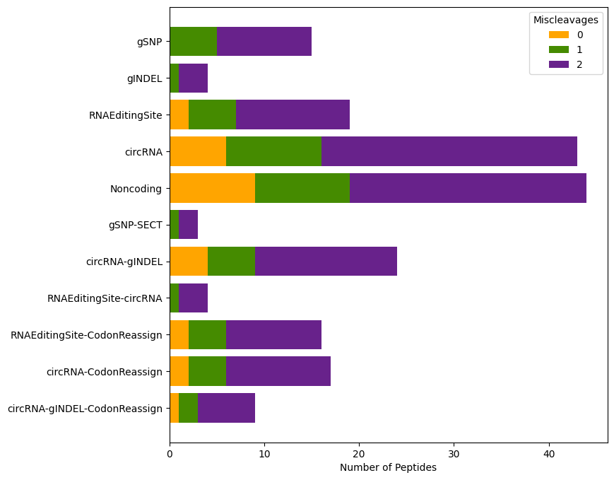

Vignette
Welcome to the vignette for moPepGen, a powerful Python package designed for generating custom proteogenomic peptide databases for proteomics library search. This vignette aims to provide you with a comprehensive overview and step-by-step guide on utilizing moPepGen to create custom databases for non-canonical peptide detection in mass spectrometry-based proteomics experiments. A small demo dataset has been provided, and each step should take no more than one minute to run on any computer.
Installation
moPepGen is a command line tool designated to execute in a Unix-like environment. For MacOS and Linux users, moPepGen can be installed using the command below. For Windows users, we recommend installing and running moPepGen from WSL (Windows Subsystem for Linux). Installation should take about one minute to finish.
pip install git+ssh://git@github.com/uclahs-cds/package-moPepGen.git
Install a specific version.
pip install git+ssh://git@github.com/uclahs-cds/package-moPepGen.git@v0.11.3
You can also clone the repo and install it directly from the source code.
git clone git@github.com:uclahs-cds/package-moPepGen.git
cd package-moPepGen
pip install . --use-feature=in-tree-build
Reference Data
moPepGen requires a set of reference files, including the reference genome, its annotation and the translated protein sequences. We currently support reference files downloaded from two sources, ENSEMBL and GENCODE. See here for more details.
A simulated reference set is provided for demonstration. The demo reference set only contains 5 transcripts and is only about 40 KB in size so should run very easily on any computer. The demo reference set can be downloaded with the commands below.
cd ~
mkdir -p moPepGen-demo
cd moPepGen-demo
wget https://github.com/uclahs-cds/package-moPepGen/raw/main/test/files/genome.fasta
wget https://github.com/uclahs-cds/package-moPepGen/raw/main/test/files/annotation.gtf
wget https://github.com/uclahs-cds/package-moPepGen/raw/main/test/files/translate.fasta
Convert reference set into index files for quick access by moPepGen.
moPepGen generateIndex \
-g genome.fasta \
-a annotation.gtf \
-p translate.fasta \
-o ./index
Parsing
The moPepGen workflow starts with parsing a variety of variant files into GVF, a TSV format derived from VCF, to be used by moPepGen to call variant peptides.
SNP & INDEL
Single nucleotide variants (SNVs/SNPs) and small insertions/deletions (INDELs) called by variant callers (e.g. GATK and Mutect2) must be annotated by the Variant Effect Predictor (VEP) first to get the genes each variant is associated with. Here is an example command with the arguments we commonly use. Please ensure that your ${OUTFILE_FILE} ends in the suffix .tsv or .txt, as they are the formats accepted by parseVEP.
Note that, the VEP cache files must be downloaded prior to running VEP (see here). The VEP developers recommend downloading the VEP cache version which corresponds to the Ensembl VEP installation. We also strongly recommend explicitly providing the exact reference genome and GTF file used in moPepGen to VEP to ensure the consistency of transcript IDs (i.e., using --custom ${ANNOTATION_GTF},${REFERENCE_VERSION},gtf). The exact genome FASTA and annotation GTF files should be used later when calling for variant peptides.
Warning
If you use --chr to limit the chromosomes to annotate, make sure the style matches your VCF/BED file. For example, if the chromosomes have the 'chr' prefix in your VCF file (i.e., chr1, chr2, ...), you must include the prefix as well (i.e., --chr chr1,chr2,chr3).
The example data does not work for VEP.
vep \
--offline \
--cache \
--check_ref \
--no_stats \
--fork ${N_THREADS} \
--buffer_size 10000 \
--distance 0 \
--assembly GRCh38 \
--no_intergenic \
--chr 1,2,3,4,5,6,7,8,9,10,11,12,13,14,15,16,17,18,19.20,21,22,X,Y,M \
-i ${INPUT_GVF_FILE} \
-o ${OUTPUT_TSV_FILE} \
--fasta ${GENOME_FASTA} \
--custom ${ANNOTATION_GTF},${REFERENCE_VERSION},gtf
If you provided a custom GTF file to VEP, please also use a filter command to only keep the annotation records from the custom reference.
filter_vep \
--force_overwrite \
-i ${INPUT_FILE} \
-o ${OUTPUT_FILE} \
--filter "Source = ${REFERENCE_VERSION}"
For demonstration, we provide the following VEP output file in TSV format, to be used by moPepGen.
wget https://github.com/uclahs-cds/package-moPepGen/raw/main/test/files/vep/vep_snp.txt
The output VEP TSV file must be parsed by parseVEP into GVF format.
moPepGen parseVEP \
-i vep_snp.txt \
--index-dir index \
-o vep_snp.gvf \
--source SNV
The --source argument is used to specify the type of variants (e.g., SNP, SNV, INDEL) parsed. The source names are used in later post-processing steps, and are required by all moPepGen parsers.
Fusion
moPepGen provides parsers to three fusion callers, STAR-Fusion, Arriba and FusionCatcher.
As an example, we provide a STAR-Fusion TSV output file for demonstration.
wget https://github.com/uclahs-cds/package-moPepGen/raw/main/test/files/fusion/star_fusion.txt
Parse it into GVF format.
moPepGen parseSTARFusion \
-i star_fusion.txt \
--index-dir index \
--source Fusion \
-o star_fusion.gvf
By default, parseSTARFusion only keeps fusion events with minimal est_J value of 5. This can be altered by the --min-est-j argument.
Alternative Splicing
moPepGen accepts alternative splicing (AS) events estimated by rMATS. RMATS estimates five AS events: SE (skipped exon), A3SS (alternative 3' splicing), A5SS (alternative 5' splicing), MXE (mutually exclusive exons), and RI (retained introns), accepted by parseRMATS as separate input channels. Noted that only the *.JC.txt files are supported.
Example data:
wget https://github.com/uclahs-cds/package-moPepGen/raw/main/test/files/alternative_splicing/rmats_se_case_1.SE.JC.txt
wget https://github.com/uclahs-cds/package-moPepGen/raw/main/test/files/alternative_splicing/rmats_a3ss_case_1.A3SS.JC.txt
wget https://github.com/uclahs-cds/package-moPepGen/raw/main/test/files/alternative_splicing/rmats_a5ss_case_1.A5SS.JC.txt
wget https://github.com/uclahs-cds/package-moPepGen/raw/main/test/files/alternative_splicing/rmats_mxe_case_1.MXE.JC.txt
wget https://github.com/uclahs-cds/package-moPepGen/raw/main/test/files/alternative_splicing/rmats_ri_case_1.RI.JC.txt
Parse AS events output by rMATS into GVF format with parseRMATS. Note that you don't have to provide all 5 AS files to parseRMATS.
By default, parseRMATS only accepts AS events with inclusion and exclusion junction counts of at least 1. These cutoffs can be set by --min-ijc and --min-sjc. See here for a complete list of arguments.
RNA Editing Sites
RNA editing sites are specific positions within mRNA molecules where nucleotides undergo post-transcriptional modifications. moPepGen supports RNA editing sites called by REDItools. Note that the REDItools output must be annotated by the AnnotateTable.py from the REDItools package prior to being passed to parseREDItools. Below is the command that can be used to perform the annotation. Note that the ${ANNOTATION_GTF} must be the same file later used in parseREDItools and callVariant. ${PREFIX} is the prefix of column names for gene and transcript IDs.
AnnotateTable.py \
-i ${INPUT_TXT} \
-a ${ANNOTATION_GTF} \
-s 4 \
-c 1,2,3 \
-n ${PREFIX} \
-o ${OUTPUT_TXT}
Example data:
wget https://github.com/uclahs-cds/package-moPepGen/raw/main/test/files/reditools/reditools_annotated.txt
Parse REDItools output to GVF:
By default, parseREDItools looks for the transcript ID in column 17. This can be changed with --transcript-id-column, which takes a 1-based column number. See here for a complete list of arguments.
CircRNA
CircRNAs are commonly recognized as noncoding RNAs, but evidence has shown that they are potentially translatable. moPepGen accepts circRNA events called by CIRCexplorer.
Download demo data:
wget https://github.com/uclahs-cds/package-moPepGen/raw/main/test/files/circRNA/CIRCexplorer_circularRNA_known.txt
Parse it into GVF format.
moPepGen parseCIRCexplorer \
-i CIRCexplorer_circularRNA_known.txt \
-o circRNA_CIRCexplorer.gvf \
--index-dir index \
--source CircRNA
By default parseCIRCexplorer accepts the text file output by CIRCexplorer2, however, CIRCexplorer3 is also supported with the --circexplorer3 flag. We also provide a series of filtering parameters that can be found here.
Non-canonical Peptides Calling
moPepGen provides three commands for non-canonical peptide calling. callVariant for calling peptides from variant GVFs, callNovelORF for performing 3-frame translation on transcripts to find novel ORFs, and callAltTranslation for calling peptides that harbor alternative translation events such as selenocysteine termination and W > F substitutants.
Variant Peptides
Variant peptides, peptides that harbor any variant, can be called using the callVariant command. callVariant must take one or more GVF files produced by moPepGen parsers.
moPepGen callVariant \
-i vep_snp.gvf star_fusion.gvf alt_splice_rmats.gvf rna_editing_reditools.gvf circRNA_CIRCexplorer.gvf \
--index-dir index \
-o variant_peptides.fasta \
--threads 4
callVariant supports multi-processing and the number of processors to use can be specified with the --threads argument. The --selenocysteine-termination and --w2f-reassignment arguments can be used to call variant peptides that also carry selenocysteine termination and W2F reassignment. By default, callVariant uses trypsin as the enzyme for in silico digestion and allows up to 2 miscleavages, and this can be specified with --cleavage-rule and --miscleavage. See here for a complete list of arguments supported by callVariant.
Novel ORF Peptides
Novel ORF peptides, peptides that could potentially be translated from novel open reading frames, can be called using callNovelORF. By default, callNovelORF only searches for novel ORFs from transcripts canonically annotated as noncoding. Protein coding transcripts can be included using --coding-novel-orf. Note that callNovelORF does not take any variants as input but only works with the reference set of novel ORF transcripts. There is no need to rerun callNovelORF unless you wish to use a different enzyme or reference set.
moPepGen callNovelORF \
--index-dir index \
-o novel_orf_peptides.fasta
Similar to callVariant, trypsin is the default enzyme and the default maximum number of miscleavages is 2. These can be specified with --cleavage-rule and --miscleavage. See here for a complete list of arguments supported by callNovelORF.
Alternative Translation Peptides
Alternative translation peptides are those that harbor special events during translation, such as selenocysteine termination and W > F substitutants, where the genetic code is not altered but a different polypeptide is produced (see here for more details). Similar to novel ORF peptides, callAltTranslation only calls peptides using reference transcripts.
moPepGen callAltTranslation \
--index-dir index \
-o alt_trans_peptides.fasta
And again, callAltTranslation also uses trypsin as the default enzyme, and up to 2 miscleavages by default. See here for a complete list of arguments.
Post-processing
moPepGen provides a series of post-processing commands that aim to deliver FASTA files ready for database searching. The post-processing tasks include generating summary statistics of a non-canonical database, filtering a database by transcript abundance, splitting a database to separate tiered databases, creating decoy databases, shortening fasta headers for easy handling by search engines, and merging multiple database files for multiplexed proteomic experiments.
Summarizing
The typical first step after generating a variant peptide database is to inspect its contents. summarizeFasta takes a variant peptide fasta file output by callVariant and summarizes the variant peptides by categories based on the value of --source you input when calling the parser commands. summarizeFasta must take all GVFs used as input to callVariant.
moPepGen summarizeFasta \
--gvf vep_snp.gvf star_fusion.gvf alt_splice_rmats.gvf rna_editing_reditools.gvf circRNA_CIRCexplorer.gvf \
--variant-peptides variant_peptides.fasta \
--index-dir index
By default, summarizeFasta outputs to stdout, which can be saved to a text file using the -o argument. In case --output-image is given, a horizontal bar plot will be saved.

Because moPepGen calls enzymatically cleaved peptides, there is the possibility that the same peptide is called from multiple transcripts, or the same transcript with different or different combinations of variants. For example, the peptide below is called twice from two separate transcripts with two different variants.
>ENST00000622235.5|SNV-100-G-T|4 ENST00000614167.2|RES-202-G-A|2
HETLFLLTFPR
To resolve the issue of collapsed peptides like the example above, we use the --order-source argument that takes the priority order of sources considered. It takes the source names in a comma-separated format. For example --order-source gSNP,RNAEditing will prioritize gSNP over RNA editing events, thus the example peptide above will be assigned to the gSNP category. Note that the values passed into --order-source must match the values used in --source in the corresponding parser calls. If --order-source is not provided, the source priority order will be inferred from the order of input GVF files.
Besides variant peptides called by callVariant, novel ORF peptides and alternative translation peptides can also be passed to summarizeFasta with --novel-orf-peptides and --alt-translation-peptides.
Filtering
The fitlerFasta module is designed to take an RNA abundance matrix and filter the non-canonical peptides based on the abundances of their corresponding transcripts.
We provide an example RSEM table for demonstration.
wget https://github.com/uclahs-cds/package-moPepGen/raw/main/test/files/rsem/rsem.txt
moPepGen filterFasta \
-i variant_peptides.fasta \
-o variant_peptides_filtered.fasta \
--exprs-table rsem.txt \
--skip-lines 1 \
--tx-id-col 1 \
--quant-col 6 \
--quant-cutoff 10 \
--index ./index
--skip-lines indicates the top x number of lines in the abundance matrix that should be skipped. These lines are usually headers or notes output by the quantitation software. --tx-id-col is used to specify the 1-based column number for transcript IDs. Any type of quantitation metrics can be used for filtering (e.g. count, TPM, FPKM) as long as a desired cutoff is given in --quant-cutoff (inclusive). Note that the same reference GTF should be used during quantitation so the transcript IDs can be mapped correctly to variant peptides called by moPepGen.
Splitting
The splitFasta command is provided to split a variant peptide database into several separate databases for tiered database searching, particularly for the purpose of database-specific false discovery rate control.
mkdir -p split
moPepGen splitFasta \
--variant-peptides variant_peptides.fasta \
--gvf vep_snp.gvf star_fusion.gvf alt_splice_rmats.gvf rna_editing_reditools.gvf circRNA_CIRCexplorer.gvf \
--output-prefix split/split \
--index-dir index
Similar to summarizeFasta, splitFasta also takes a --order-source to specify the priority order of which category a peptide should be assigned to, which will be inferred from the input GVFs if not specified. --group-source is used to group sources as a super category. For example, --group-source Germline:gSNP,gINDEL Somatic:sSNV,sINDEL will group sources of gSNP and gINDEL together as Germline, and sSNV and sINDEL as Somatic.
Note that, when assigning a peptide to a source category, it must carry exclusively the desired type(s) of variants. For example, a peptide of 'ENST00000622235.5|SNV-100-G-T|SNV-110-C-A|2' is assigned to SNV, while a peptide of 'ENST00000622235.5|SNV-100-G-T|RES-110-C-A|2' will be assigned to the category of SNV-RNAEditing but not SNV. --max-source-groups is used to specify the maximum number of source groups that should be split into individual FASTA files. The default value is 1, which means all peptides that contain two or more types of variants will not be written into their own FASTA file, but kept in the '\<prefix>_Remaining.fasta' file.
Similar to summarizeFasta, novel ORF and alternative translation peptides can be passed to splitFasta via --novel-orf-peptides and --alt-translation-peptides.
See here for a complete list of arguments.
Target-Decoy Database
Most search engines expect a target-decoy database as input to estimate the false discovery rate (FDR). We provide a decoyFasta command, that takes a variant peptide database and adds decoy sequences with either the reverse or shuffle algorithm.
moPepGen decoyFasta \
-i split/split_gSNP_encode.fasta \
-o split/split_gSNP_decoy.fasta \
--method reverse
By default, amino acid residues at cleavage sites are unmodified. Trypsin is the default enzyme and can be changed using --enzyme. --non-shuffle-pattern can be used to specify additional amino acid residues to be fixed in the decoy sequence. By default, the N- and C-terminal residues are also fixed, which can be turned off by setting --keep-peptide-nterm or --keep-peptide-cterm to false. See here for a complete list of arguments.
Shortening FASTA headers
Some search engines have limits on how long the database FASTA headers can be. The headers of moPepGen's variant FASTA files could be very long, because the same peptide can be called from different transcripts. We provide a shortening approach by replacing all FASTA headers with UUIDs and storing the mapping information in a .dict file with the same prefix.
moPepGen encodeFasta \
-i split/split_gSNP.fasta \
-o split/split_gSNP_encode.fasta
Note that for decoy peptides, the same UUID as in their target sequences will be used, with the decoy prefix/suffix retained. The resulting .dict file can be used for mapping both back to the original FASTA header.